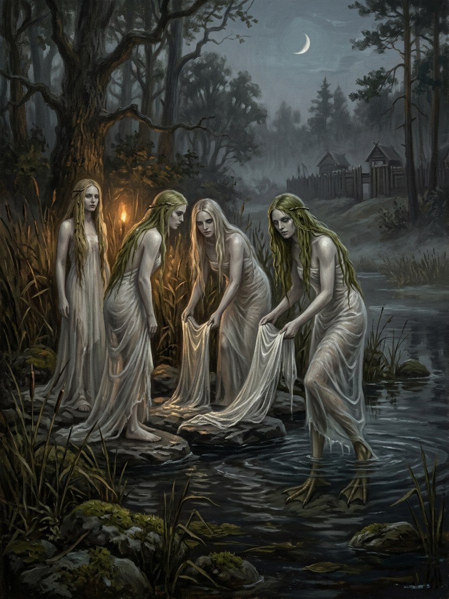

Laumės (weavers by the water)¶
Folk source [Historical record]¶
Supernatural women of meadows, rivers, lakes and swamps: beautiful, long-haired, betrayed by hen’s or goat’s feet. They spin, weave and wash linen at night, reward diligent and orphaned girls and punish the lazy. Women must not spin on Thursday evening, the laumės’ time. A laumė’s gift of linen never runs out unless the recipient measures it. They dance in moonlit meadows, marry mortal men (who lose them when a taboo is broken) and swap human babies for their own. The rainbow is laumės juosta, the laumė’s sash.
Laumės (weavers by the water)

Laumės (weavers by the water) · creature¶
Type |
creature |
Status |
The saga’s invention |
Note |
Bestiary §6. Danger II → IV. |
In the saga (where the folk are half-wrong)¶
The laumės are the weavers of custom. Every courtesy between the land’s people and its spirits is a thread they spin, and the Silent Pact is their great tapestry; they are its most direct witnesses and its surety. Neither kind nor cruel: they enforce a law of work and courtesy, which looks like kindness to the diligent and cruelty to the rest. The Thursday taboo is real: Thursday is Perkūnas’s day, and a woman spinning then spins against the laumės’ own wheel.
Signs & habitat¶
Paddle-beats by the river at midnight; wet linen spread on meadows at dawn with no one about; hen-tracks in the dew; a rainbow ending at a lake.
Before / after the Unbinding¶
Before: hard but fair. After: the tapestry tears. Laumės who once swapped babies now drown them, and their endless linen becomes shrouds.
Banes, wards, bargains, and their cost¶
Spin diligently, never on Thursday evening, and leave a hank of flax by the water at Rasos (the labour is a poor girl’s dowry). Never measure a laumė’s gift, so you can never sell it. Never watch laumės bathe (the curious are blinded or drowned). Iron does little; courtesy is the only real ward.
Danger level¶
II hazard → IV deadly.
Story hooks¶
Book I: Birutė’s women washing linen in the sea (ch. 11) echo them. Book II: a laumė-wife in a southern castle leaves when a Catholic priest blesses the bed. Book V: laumės’ shrouds wrapping the unburned dead of Pabaiskas.
Relations
Servants: Laumiukai (changelings)
Surety for: Tylioji Sutartis (Silent Pact) — The Pact’s direct witnesses.
Origin [Historical record] beautiful long-haired water women with hen's feet, spinners and linen-washers, Thursday-evening taboo · [The saga's invention] the weavers of custom
Tier Dvasia · custom-bound; surety and direct witnesses of the Silent Pact
Danger II hazard → IV deadly
Habitat Rivers, meadows, lakes and swamps; midnight by the water
Wants Diligence and courtesy: a hank of flax by the water at Rasos; no spinning on Thursday evening
Takes The curious, blinded or drowned. After 1387, the babies they once swapped
Signs Paddle-beats at midnight; wet linen on meadows at dawn with no one about; hen-tracks in the dew; a rainbow ending at a lake (laumės juosta)
Banes Iron does little. Courtesy is the only real ward
Half-wrong truth. The diligent see kindness. The truth is a law of work and courtesy, neither kind nor cruel, which looks like cruelty to everyone else. Thursday is Perkūnas's day, and a woman spinning then spins against the laumės' own wheel.
Weavers of custom. Every courtesy between the land's people and its spirits is a thread they spin. The Silent Pact is their great tapestry.
Spinning and washing. Weave and beat linen at night by the water.
Reward and punishment. Reward the diligent and orphaned; blind or drown the lazy and the watchers.
Never measure the gift. A laumė's linen never runs out, so you can never sell it.
Never watch them bathe. The curious are blinded or drowned.
The tapestry tears (after 1387). Laumės who once swapped babies now drown them, and their endless linen becomes shrouds.
Connections¶
graph LR
laumes["Laumės (weavers by the water)"]
laumiukai["Laumiukai (changelings)"]
silent_pact["Tylioji Sutartis (Silent Pact)"]
laumes -->|Surety for| silent_pact
laumiukai -->|Servant of| laumes
style laumes stroke-width:3px